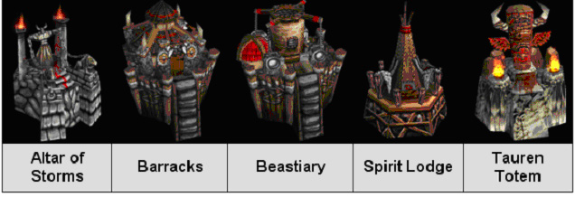

| The Orc Attack |
Gar'dal Grimsight, the hero of the Orc horde, is planning a massive attack on the human stronghold. But to overcome the stiff resistance of the humans, Grimsight would need an army of mammoth size. Realizing this, he wastes no time - all his five buildings start to produce units on his command. The Altar of Storms, the Barracks, the Beastiary, the Spirit Lodge and the Tauren Totem - these are his five unit producing buildings. These buildings are strategically placed in different locations but can have a rally point where the units are sent as soon as they are produced. This gives Grimsight a good coverage of the territory as well as the flexibility of unit movement.

Now before Grimsight wages the war, the units produced need to meet at this rally point in the map. This point should be chosen in a way that the shortest distance from the five unit producing buildings to this location is equal. If there are multiple such spots, the units would gather in a place from where the shortest distance to the farthest point in the map is the minimum. Your task is to help the belligerent hero in determining this minimum shortest distance of the farthest point.
However, a small problem remains. The shortest distance between two points in the map is not necessarily the straight line distance between them. Trees, hills and water sheds can act as obstacle for the free movement of the units. So the units may need to go through different locations to get to the point where they are intended to go. If the distances between all these locations in the map are given, then it is possible to compute the shortest distance traveled by the units. The rally point is one such location in the map that we need to find. To keep it simple, we can treat the buildings as locations in the map as well. You may be relieved to know that in Grimsight's world all the units move from one location to another in the shortest possible ways only.
Here is a sample scenario. The locations 1 through 5 are the five unit producing buildings. Apart from those, there are five more locations in the map. As we can see, the locations 9 and 7 are equidistant from the five unit producing buildings. So they are the candidates for the rally point. But we would choose location 9 over location 7 as the farthest location from 7 has a cost of 51 whereas the farthest location from 9 would incur a cost of 40. So the cost that Grimsight wants to measure is this distance cost 40.
Please note that the sample input/output section does not include the example shown here.
There can be multiple test cases. The first line of input gives you the number of test
cases, T (
1 T
T 20). Then T test cases follow. The first line of each input gives you
the number of locations, L (
5 < L
20). Then T test cases follow. The first line of each input gives you
the number of locations, L (
5 < L 100), followed by the number of distance information between
the locations, D (
1
100), followed by the number of distance information between
the locations, D (
1 D
D 1000). Each of
the next D lines would contain three integers U
(
1
1000). Each of
the next D lines would contain three integers U
(
1 U
U L), V
(
1
L), V
(
1 V
V L) and C
(
1
L) and C
(
1 C
C 1000) indicating a distance of
cost C between the locations U and V. There may be multiple occurrences of the same U, V pair in the
input - it is up to you to decide which one to use. You should remember that a
unit does not need to cover any distance if it remains static. We would
consider the locations 1 through 5 to be the five buildings of our interest.
1000) indicating a distance of
cost C between the locations U and V. There may be multiple occurrences of the same U, V pair in the
input - it is up to you to decide which one to use. You should remember that a
unit does not need to cover any distance if it remains static. We would
consider the locations 1 through 5 to be the five buildings of our interest.
For each of the test case, you need to print one line of output. The output for each test case should start with the serial number of the map, followed by the minimum possible distance from the farthest point. This distance, as we have already mentioned, has to be measured from the rally point which is equidistant from the five buildings. It is implied that all the locations in the map should be reachable from this point. When such a point does not exist you should print a `-1' instead.
2 7 11 1 7 2 2 7 2 3 7 2 5 7 2 6 7 1 1 6 1 2 6 1 3 6 1 4 6 1 5 6 1 7 6 1 6 1 1 2 3
Map 1: 1 Map 2: -1